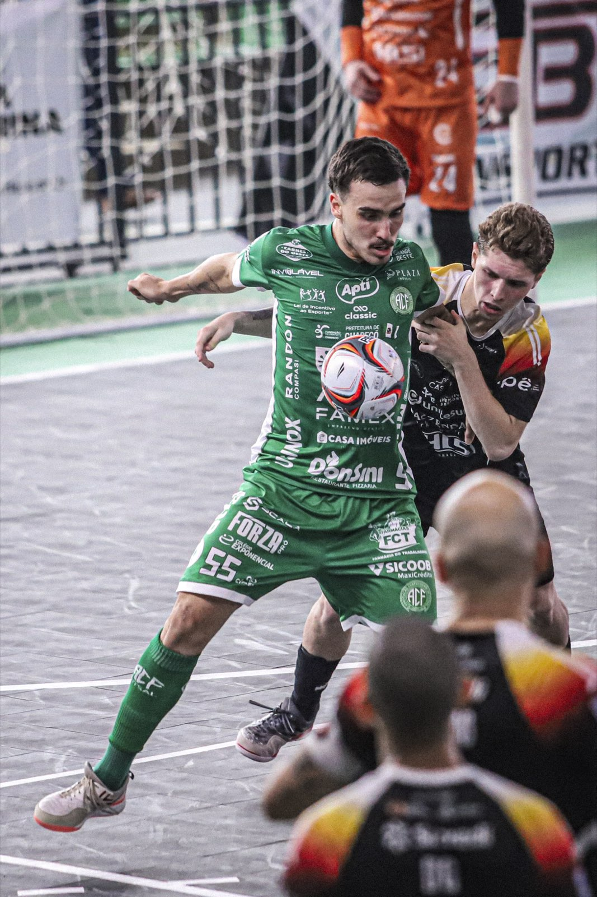
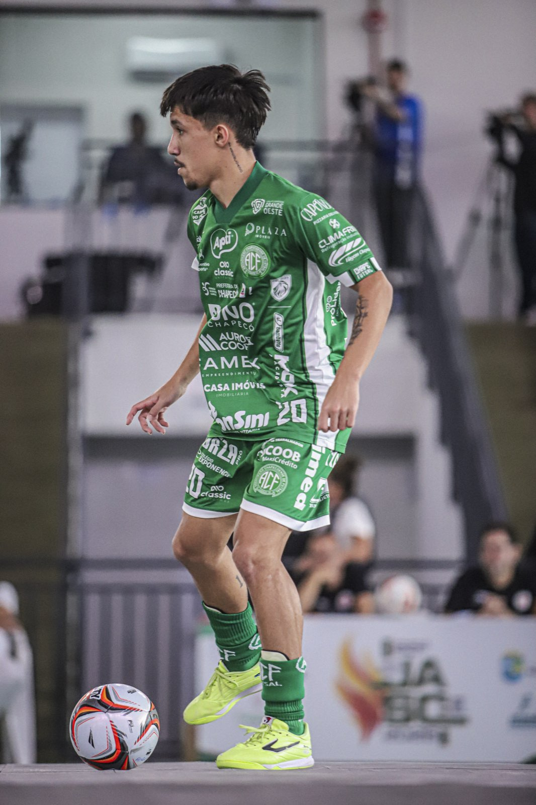
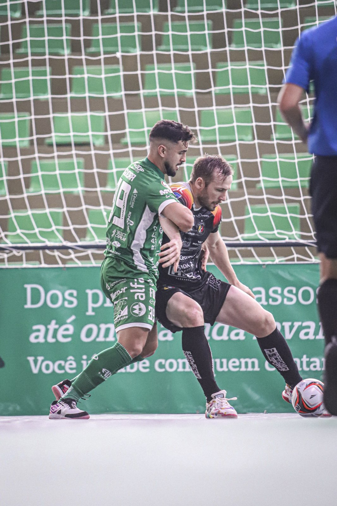
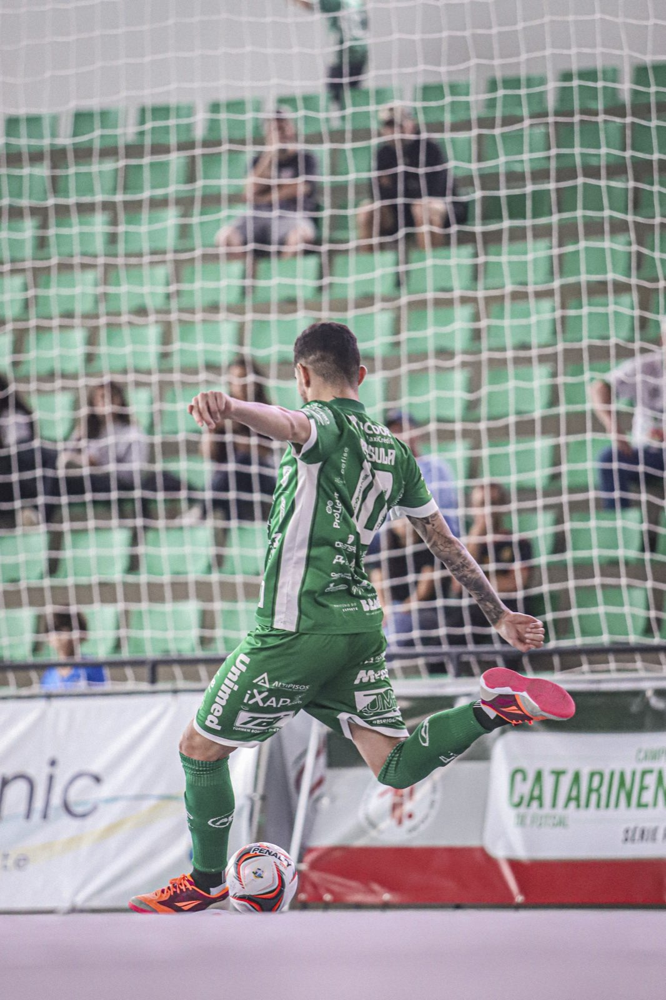
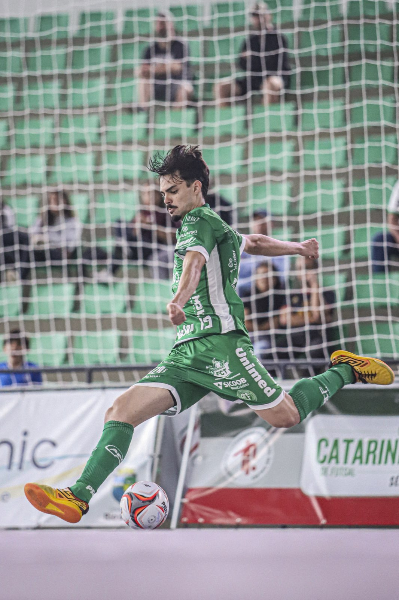

A equipe Prefeitura de Chapecó/Chapecoense/Unochapecó colocou Chapecó no pódio do futsal masculino dos Jogos Abertos de Santa Catarina (JASC) 2026. Na manha deste sábado (28), o Verdão das Quadras ficou com o vice-campeonato na Arena Cícero Paranhos, em Rio do Sul, cidade-sede da edição deste ano. A equipe do Oeste catarinense acabou superada na final por Blumenau pelo placar de 2 a 0.


Chapecó voltou a decidir o título do futsal masculino dos JASC, o maior evento poliesportivo do Estado após 13 anos. Em 2013, o município decidiu a taça com Itajaí e terminou em segundo. A última vez que os chapecoenses venceram os Jogos Abertos na modalidade foi em 1995. Neste sábado, a equipe comandada por Agnaldo Pereira criou muitas chances, mas os blumenauenses foram mais felizes nas finalizações. Lincoln fez a 1 a 0 aos 9’54” do primeiro tempo, enquanto DG ampliou a vantagem, faltando 15 segundos para o fim da partida.

Agora, a Chapecoense vai em busca de uma vaga à final do Campeonato Brasileiro. O Verdão das Quadras encara o Atlético Piauiense nesta terça-feira (1), às 19h15, na Arena Verdão, em Teresina (PI). A Chape Futsal acabou superada no jogo de ida por 2 a 1, no SESC Chapecó, e precisa vencer no tempo normal para forçar a prorrogação. Em um eventual tempo extra, o empate leva a disputa para os pênaltis.


Fotos: @rolf_pht · Foto da premiação: Chape Futsal